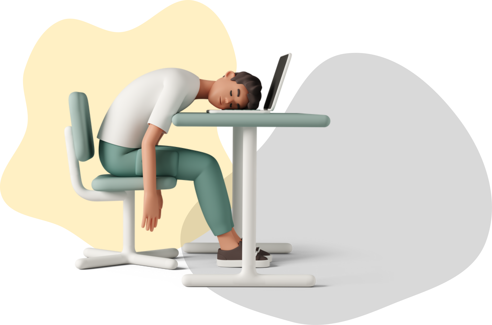

👋 Bienvenue sur le portfolio d'Arthur Bourst.
💻 Etudiant en BTS SIO à Saint Luc.
🎮 Il aime joué aux jeux vidéo.
Arthur est un joueur occasionnel, il aime principalement
les jeux en solo que se soit aventure, course automobile ou
même fast-FPS. Joué avec ses amis et pour lui une
excellente façon de s’amuser sur les jeux vidéo en ligne ou
co-op sinon il se lasse très vite du jeu.
📸 La photographie virtuelle aussi.
Depuis la découverte des modes photo dans les jeux vidéo
Arthur en a fait une nouvelle passion, une petite
communauté sur Instagram le suit pour ses réalisations sur
The Crew 2, Forza Horizon, Doom, etc...